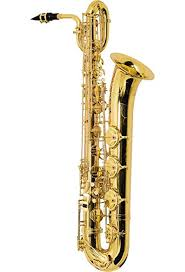

The kinds of Saxophone:
-

The soprano saxophone is a higher-register variety of the saxophone, a woodwind instrument, invented in the 1840s. The soprano is the third smallest member of the saxophone family, which consists (from smallest to largest) of the soprillo, sopranino, soprano, alto, tenor, baritone, bass, contrabass saxophone and tubax. Soprano saxophones are the smallest saxophone in common use.
-

The alto saxophone, also referred to as the alto sax, is a member of the saxophone family of woodwind instruments invented by Belgian instrument designer Adolphe Sax in the 1840s, and patented in 1846.
It is pitched in Eâ™, and is smaller than the tenor, but larger than the soprano.
The alto sax is the most common saxophone and is commonly used in concert bands, chamber music, solo repertoire,military bands, marching bands, and jazz (such as big bands, jazz combos, swing music).
The fingerings of the different saxophones are all the same so a saxophone player can play any type of saxophone.
The alto saxophone had a prominent role in the development of jazz. Influential jazz musicians who made significant contributions include Don Redman, Jimmy Dorsey, Benny Carter, Charlie Parker, Sonny Stitt, Lee Konitz, Jackie McLean, Phil Woods, Art Pepper, and Paul Desmond. -
Test text
-

Test text